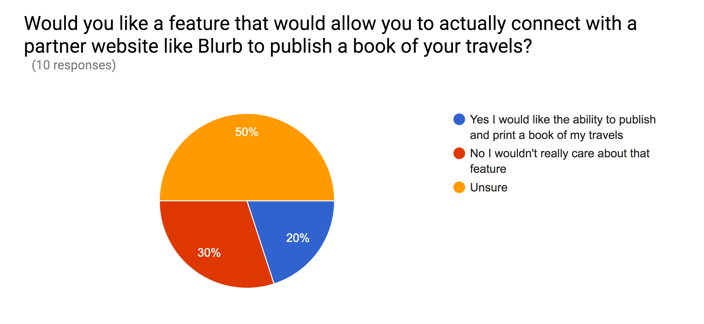
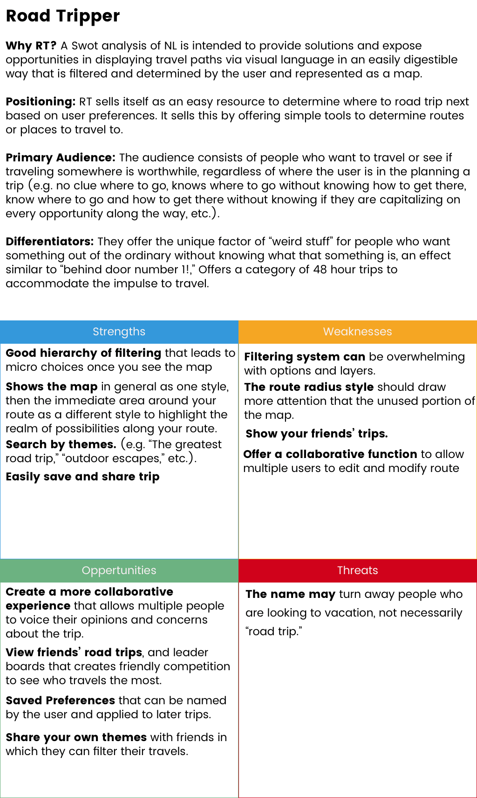
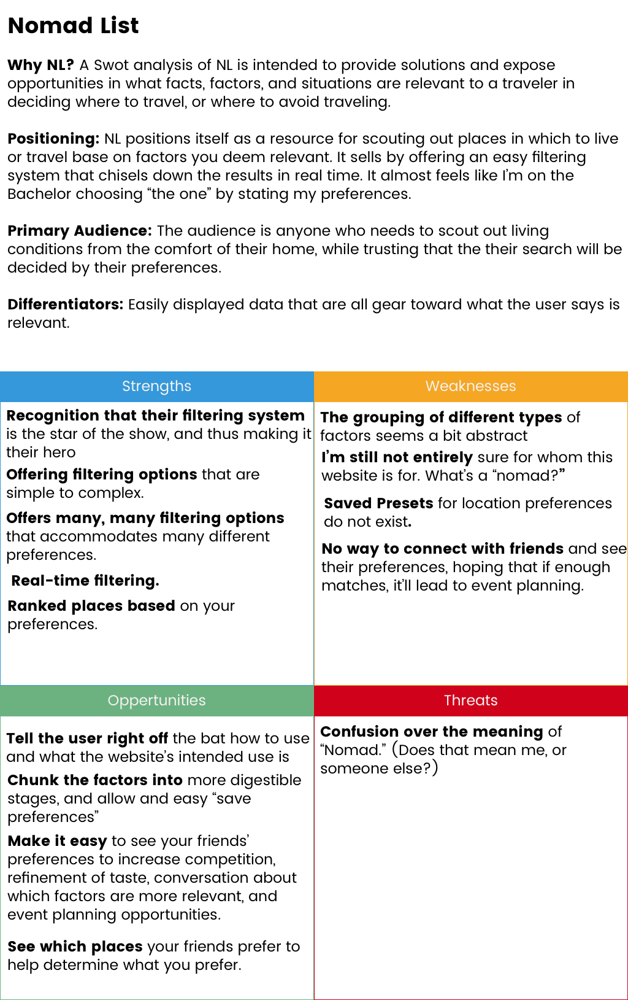
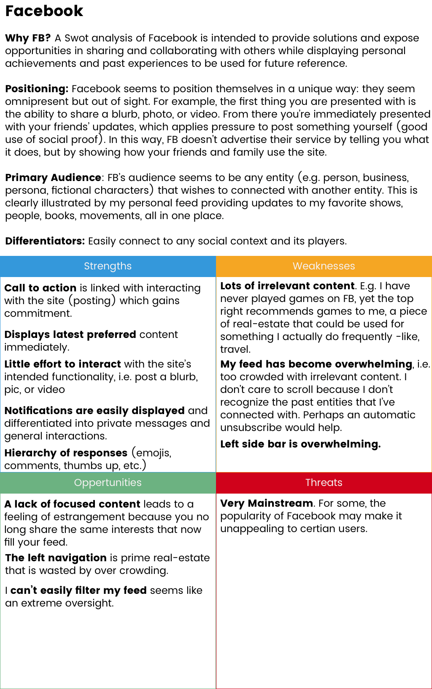
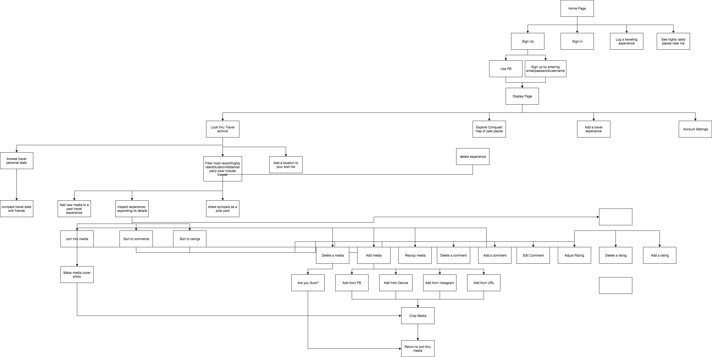
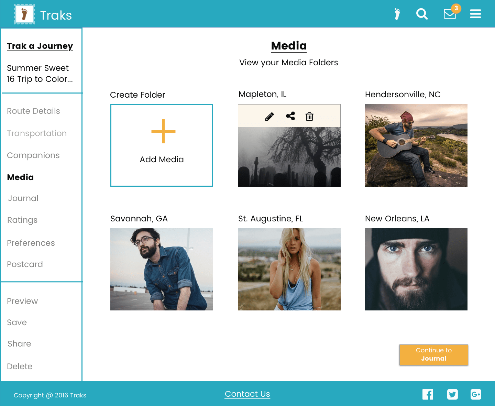
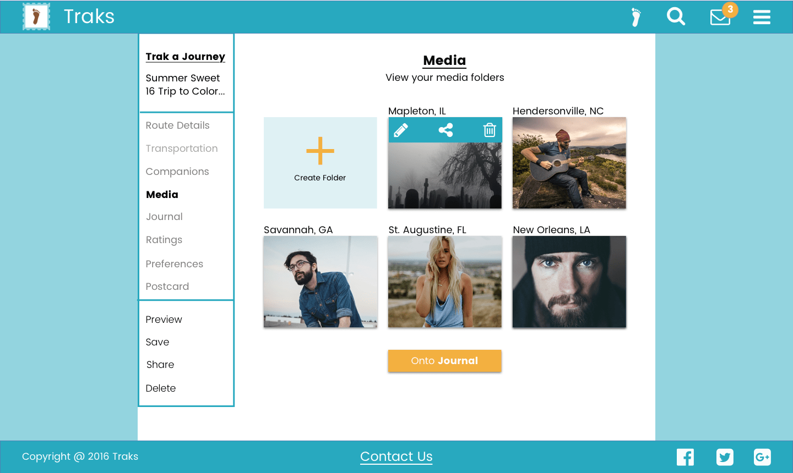

Low Fidelity: Returning User Landing Page

High Fidelity: Returning User Landing Page
Traks is all about stories so it seems best to tell you the story of how we, my husband and I, thought of it. We were living in Colorado, visiting everywhere from Denver to Grand Junction. One day we were reminiscing about our adventures when the same conclusion came up again and again- “I don’t remember.” It was the death sentence of an experience and that’s what I set out to solve-the resurrection and preservation of a travel experience.
I was tasked with designing a web application to aid people with organizing their travel experiences -past, present, and future, allowing them to capture all their experiences and access them from anywhere. This project was important to me because of my passion for traveling and my frustrations with displaying my travel portfolio in a beautiful and approachable way.
There is no digital space to hold an entire travel experience -such as, personal ratings, media, maps, and journal entries. Moreover, no way existed to share an entire experience or invite others to collaborate. This leaves people full of memories and plans and no network to express and share them.
Traks allows people to trace their travels. In one digital space, users can upload media, record their thoughts, rate their individual experiences, visualize their tracks, and share with friends and family. A user can also look forward by planning a journey, which allows them to define destinations, transportation, companions, and travel dates. Or, if the user isn’t quite ready to plan out a journey, they can create a wishlist, which is also visualized on their map. And finally, once a user wants to publish their travels in a physical book, they can publish it through a site like Blurb.
To gain insights from my users and protect against biases, I sent out a survey to discover what was meaningful to potential users. This step was crucial because it helped to keep my ideas grounded in reality and the project oriented toward users.
With my survey I wanted to understand:
1. The value of visual representation through a map.
2. The value of a rating system connected to individual experiences of a location.
3. What factors determined a location worthy of travel.
4. What aspects of a travel are important to store
5. The value of publishing travel experiences through a site like Blurb.
1. 70% of people found a map valuable.
2. 70% of people found ratings to be valuable.
3. 88% of people said cost was important, 55% distance, 55% physical environment, 55% past experiences.
4. 100% of people found photos to be valuable for storing, 60% videos, 40% journal entries, 40% ratings.
5. 20% of people found the Blurb feature valuable.
Affirmed- The survey informed me that a map, ratings, and media were worthwhile to the MVP.
Denied-I decided to drop the Blurb idea due to a lack of interest. Also, I had the idea to include voice recordings as a media option, but there was a lack of interest in this feature as well, so it too was dropped from the MVP.
Insights- From the survey, I realized that I needed to include a cost rating in conjunction to experience ratings.
I cut having a Blurb feature
I needed a way to minimize the map for the 30%
Survey results: yes for a postcard feature
Rating system is valued but must be skippable for the 30%
Cost was added as a rating factor
Wishlist idea was a maybe but not after the survey
Providing the opportunity to social travel became a must
Audio recordings were dropped as a feature
Traks has two main components: sociability and archive navigability. Furthermore, my website has no direct competition, but its main components did. With these concepts being the goal I primarily looked at three sites: Facebook, Road Tripper, and Nomad List.
1. Road Tripper does a great job allowing the user to plan their trip and their map feature is great for viewing their route. However, it is one-dimentional, allowing users to only plan a trip without carrying forward that information as some sort of travel log once the trip is executed.
2. Nomad List provides an intuitive way to filter choices and rank locations based on what the user chooses, yet it doesn’t allow a way to connect with friends, see their ratings, and collaborate.
3. Facebook, while the industry standard of social media, does little over a lot, giving many social options, but lacking depth in individual experience. For Traks, I wanted everything oriented around the user’s travel experiences.
Road Tripper Swot
Nomad List Swot
Facebook Swot
User stories and user flows were the next step to help establish my direction and give me an outline to work with.
User Flows
User Stories
Once the user stories and flows were completed I was able to move forward to personas. I interviewed several individuals and created personas that would help guide me in my process as well.
Traks was intended from the outset to be a personal, yet social platform for one’s travel experiences. Originally, I thought the name of the site would be “Travel Bug,” due to the explorative nature of the site’s users. However, bugs annoy people, and it doesn’t capture the personal and social spirit of the site. Thus, I landed on “Traks,” because it reminded me of a personal imprint left behind by a traveler, something similar to a fingerprint. Naturally, this led to a footprint as the focal point of the logo. As for the social nature of the site, I went with a stamp border, which also tied in nicely with my digital postcard idea (a special feature of the site).
Logo Brainstorming Ideas
More Brainstorming
Logo That was Chosen
For fonts, I wanted the titles to look strong and permanent, so I chose Bitter due to its strong, angular design. As for the rest of the text, I wanted an easy-to-read font that was as non-distracting as possible. Thus, Poppins was my choice, especially since it was crafted with digital screen in mind.
The color palette needed to be comprised of colors that were active yet calming. Active, because of the explorative spirit of my intended users, and calming because I knew that my users would be inputing a lot of information -and traveling can easily lead to stress. I concluded that oranges and blues would dominate the palette.
Chosen Colors for Traks
With research and brand identity under my belt, I began conceptualizing where the information would live on my pages. This part of the project consumed the most of my time, as I first developed low fidelity mockups and then moved onto high fidelity. I regularly sent my designs to users and peers for feedback. Consequently, my mockups went through quite the evolution.
This evolution of my content layout can be readily seen in the difference between my low fidelity and high fidelity mockups.
Low Fidelity: Returning User Landing Page
High Fidelity: Returning User Landing Page
Low Fidelity: Trak a Journey

High Fidelity: Trak a Journey
Low Fidelity: Browse Journeys

High Fidelity: Browse Journeys
Since I was still a relatively new designer, there were several things I discovered by pouring hours of hard work into making my mockups for Traks. The primary thing that I did not consider was the scalability of the mockups. When I used inVision to prototype my mockups, I realized the error of not thinking forward. All of my elements were ENORMOUS! I had to rescale over two hundred mockups -an action which solidified a lesson I won't soon forget.
Original Size
Scaled Version
Expert advice informed me that my work was too bulky and boxy. The expert I spoke with said it was a common mistake for newer designers because it helps us place things when we think of putting everything in boxes. This can create a very closed design and the goal was to try to open it up more. It was a breath of fresh air to remove the boxes throughout the site. It did make a cleaner, freer design and has since contributed to my more minimalist design work.
Mockup with Boxes
Mockup without Boxes
Mockup with Defined Boxes
Mockup with Less Harsh Boxes
This project helped me to begin practicing designing in the wholistic context of the project. I learned more about how all the different steps to designing actually fit together to create the “big picture”. User flows only make sense in the context of what you’ll be using them for.
Something cool I started doing was to create a “purgatory” which was a location to place ideas or designs I wasn’t sure about. That allowed me to move forward with new ideas unencumbered because I knew I always had a purgatory with my old ideas or designs I could resurrect if things went wrong. That allowed me to put my best foot forward and I rarely needed to look back but atleast I had the peace of mind that I could if need be.